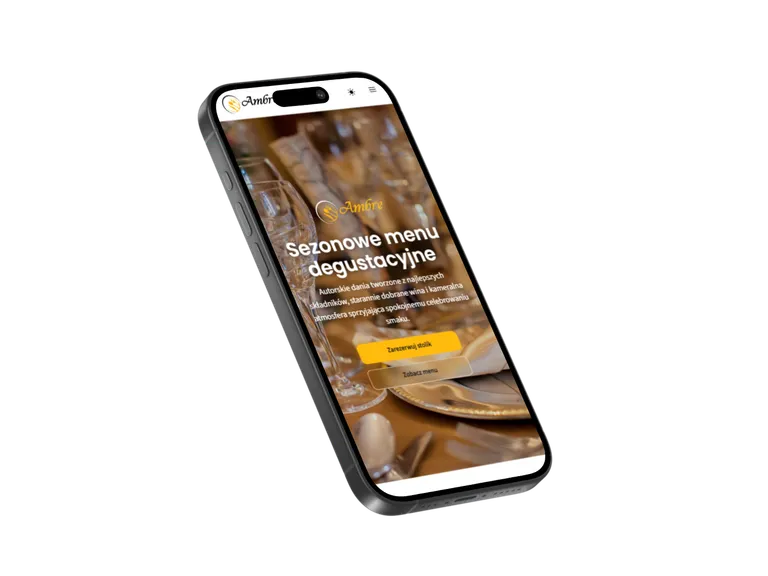
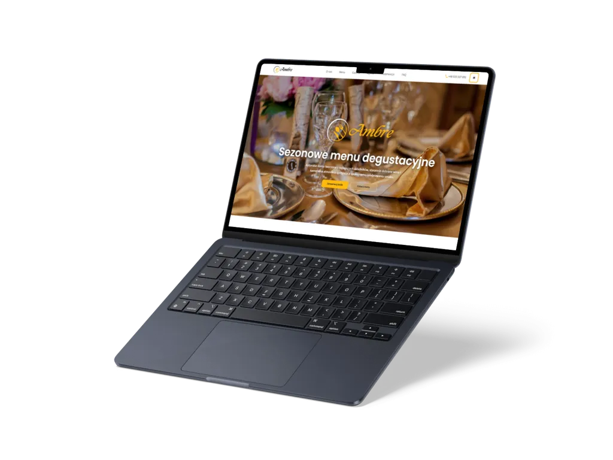

01
Ambre
Wielostronicowy front-end restauracji fine dining, który łączy elegancki charakter marki z menu, galerią, rezerwacją online i techniczną gotowością do publikacji.
Przegląd projektu
Ambre pokazuje pełniejszy zakres statycznego serwisu restauracyjnego: od strony głównej, menu i galerii po formularz rezerwacji, widoki prawne, offline i PWA.
Projekt został przygotowany jako referencyjna realizacja portfolio dla restauracji fine dining, z naciskiem na spójny interfejs, interakcje Vanilla JS, dostępność, SEO oraz proces statycznego wdrożenia.
Zakres obejmuje publiczne strony serwisu: index.html,
menu.html i galeria.html, a także strony prawne,
dedykowany widok 404.html oraz ekran offline.html. Dzięki
temu Ambre nie jest pojedynczym landingiem, tylko uporządkowanym projektem
wielostronicowym.
Warstwa interakcji obejmuje menu mobilne, scrollspy, sticky header, przełącznik motywu, płynne przewijanie, lightbox galerii, filtry zakładek, mechanizm „load more” oraz formularz rezerwacji z walidacją i fallbackiem do natywnego wysłania.
Strony
Biznes
Gastronomia
Premium
Zakres i akcenty
Case study koncentruje się na praktycznych elementach serwisu restauracyjnego: strukturze menu, rezerwacji, galerii oraz technicznym standardzie publikacji.
02
Rezerwacja i interakcje UI
03
SEO, PWA i wydajność
Technologie i standard
Ambre został zbudowany w statycznym stacku HTML, CSS i Vanilla JavaScript, z procesem buildowym oraz narzędziami wspierającymi SEO, dostępność i wydajność.
Warstwa runtime opiera się na HTML5, CSS3 z importami
base/layout/components/pages,
modułach ES oraz Service Workerze z Web App Manifestem. Tooling obejmuje PostCSS,
esbuild, ESLint, Stylelint, html-validate i Sharp.
- moduły UI dla nawigacji, motywu, lightboxa, filtrów, formularza i PWA,
-
build produkcyjny z minifikacją CSS/JS oraz generowaniem katalogu
dist, -
QA oparte o html-validate, Playwright,
@axe-core/playwright,qa:seoi Lighthouse CI.



Dalszy krok
Zobacz wielostronicowy serwis Ambre albo wróć do pełnego portfolio.
Ambre pokazuje zakres pracy nad statycznym front-endem restauracji: od menu, galerii i rezerwacji po SEO, dostępność, PWA, cache offline i przygotowanie projektu do publikacji.